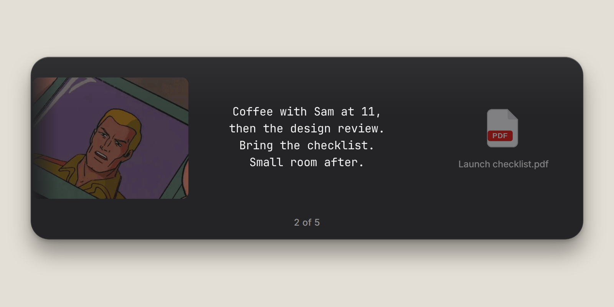
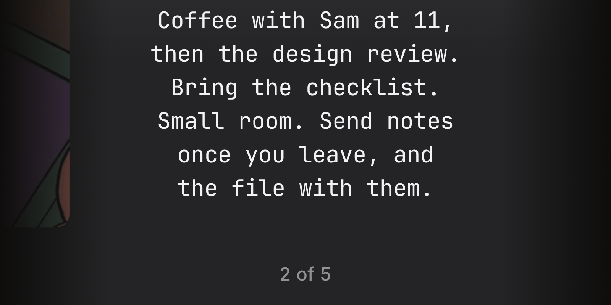
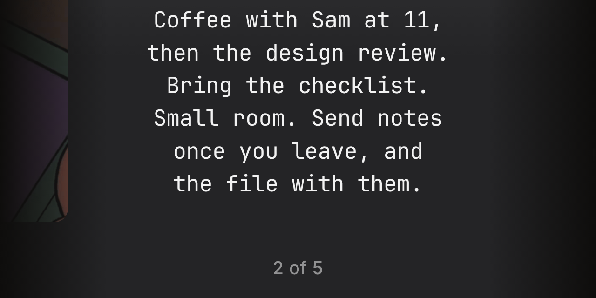
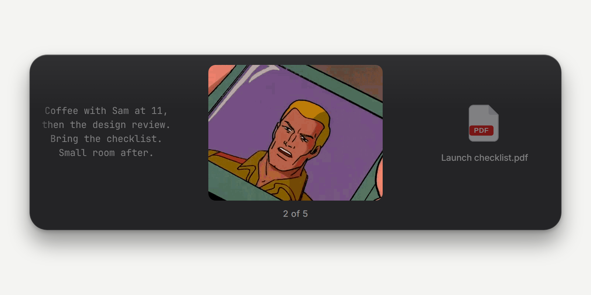
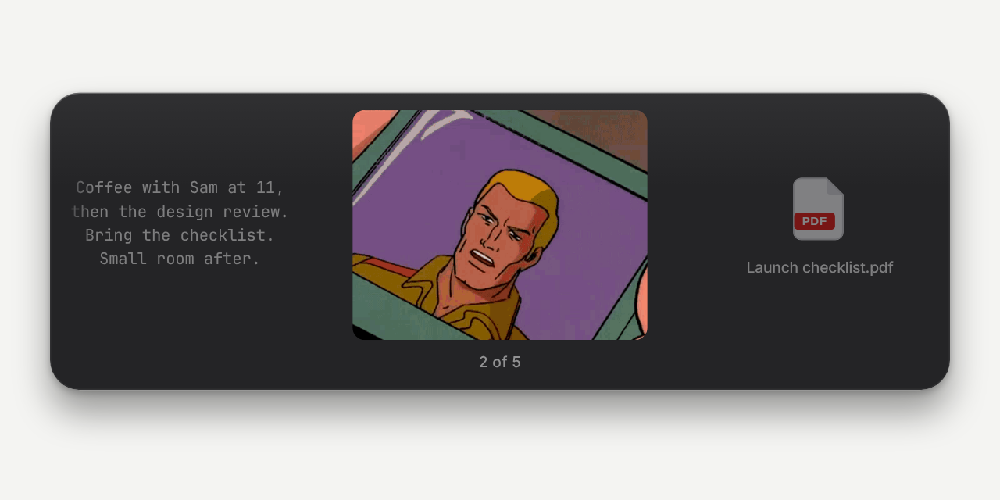
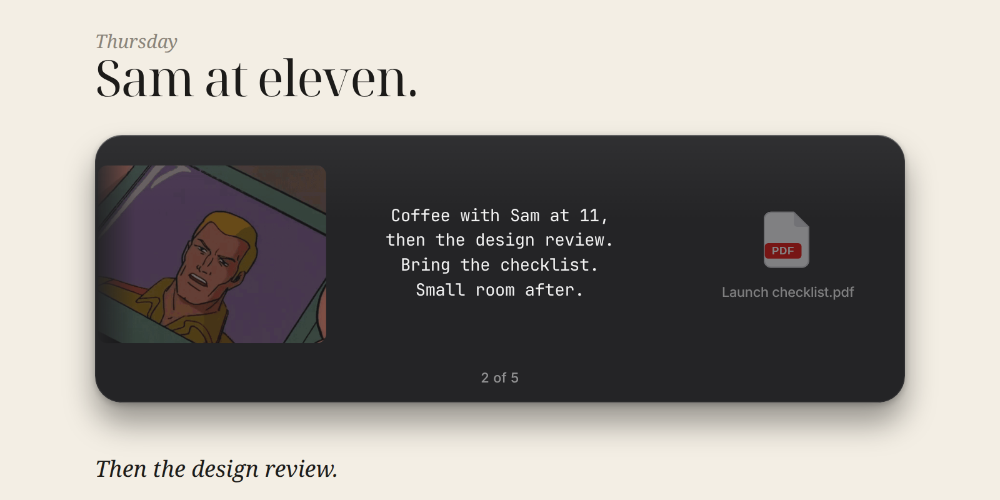
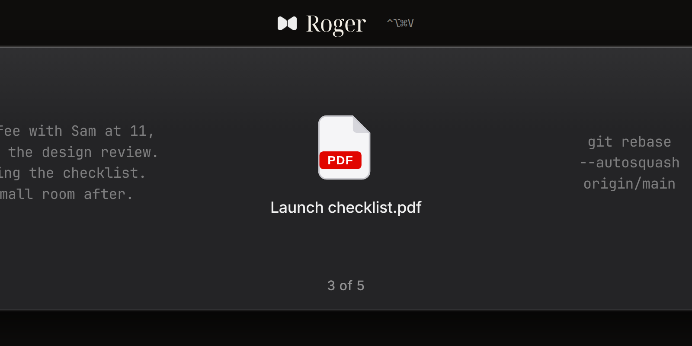
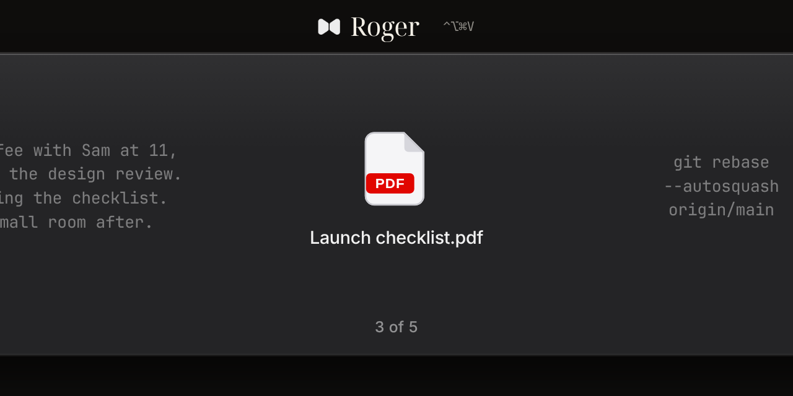

01
Still
8 / 10The whole bezel, life size, on paper. Picture, note, and file in one strip.

Roger · design lab
Same panel the app draws. Five ways of putting it in a frame. Heroes are 1600×800. The smaller frame is the 1280×640 social.
The whole bezel, life size, on paper. Picture, note, and file in one strip.

The note, cropped until the sentence is large enough to read on a phone. The counter stays.


The copied image, selected and framed, on gallery white.


The bezel opened over a note. The diary line stays outside the glass.

The file at full strength, large. Roger and the shortcut sit above the panel.

